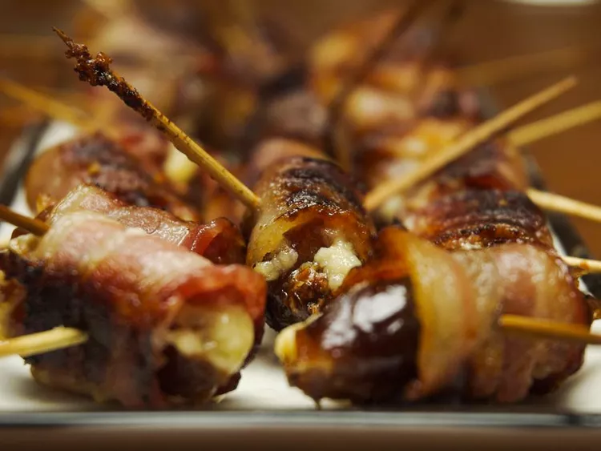

Bacon-Wrapped Dates

Description
These bacon-wrapped dates are stuffed with blue cheese and baked until crisp. They are delicious and very easy to make for a holiday party
Can You Make Bacon-Wrapped Dates Ahead of Time?
Yes! But it’s best to wait to bake the dates until just before serving. Assemble the bacon-wrapped dates and store in an airtight container in the refrigerator for up to two days. Bake according to the recipe.
Ingredients
- 1 pound pitted dates
- 4 ounces blue cheese
- 1 pound sliced bacon, cut in half
Steps
- Preheat the oven to 375 degrees F (190 degrees C).
- Slice dates in half and open them up. Pinch off pieces of blue cheese and place them into the center of dates. Press date halves together to close. Wrap each date with a half-slice of bacon and secure with a toothpick. Arrange in a baking dish or on a baking sheet with sides to catch any grease.
- Bake in the preheated oven until bacon is crisp, 30 to 40 minutes. Turn dates over after the first 20 minutes for even cooking.
Back